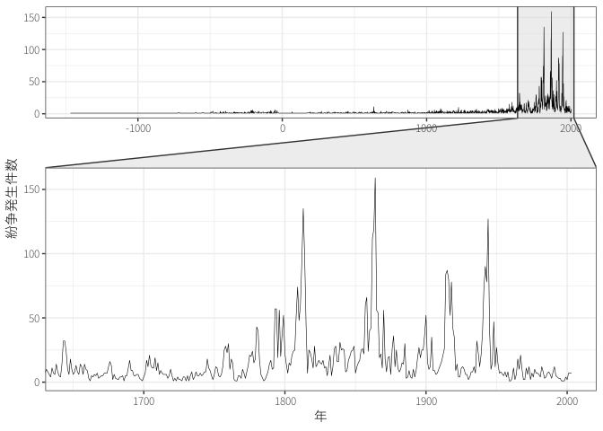
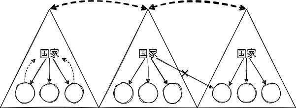
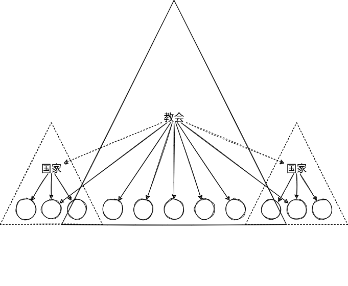
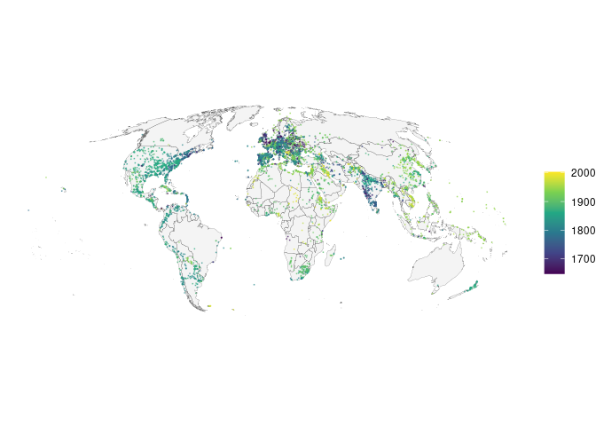

国際社会の構造
政治学入門
導入
- 国際社会とはどのような社会なのか？
- 国内社会とはどのようにことなるのか？
- 現代の国家や国際社会はどのように誕生したのか？
課題文献
- 国際社会や国際秩序
- 中西, 石田, と 田所 (2013, 第3章)
- 篠田 (2007)
- 国際連合広報センター「国際連合：その憲章と機構」
- 国家
- 国際関係史
- 村田 ほか (2023, 第1章 (unit 1-5))
- 中西, 石田, と 田所 (2013, 第2章)
- 小川, 板橋, と 青野 (2018)
- 山影 (2012, 第1–4章)
1 主権国家体系
現代の国際社会の構造＝主権国家体系 (system of sovereign state)
- 中央集権的 (centralized) ／分権的 (decentralized) ・並列的
- アナーキー


- 内部における排他性・絶対性\(\leadsto\)内政不干渉原則 (principle of non-interference)
- 外部における対等性\(\leadsto\)主権平等原則 (principle of sovereign equality)
現代の主権国家の特徴 (砂原, 稗田, と 多湖 2020)
- 領域国家
- 強制力（暴力）の独占
- 正統性
- 国民国家 (nation state)
2 国内的類推
国内的類推 (domestic analogy)(中西, 石田, と 田所 2013, 174; 篠田 2007, 39–46)
- 国際社会（国際連合）と国内社会の対比

2.1 立法
条約 (treaty) ／慣習国際法 (customary international law)
国際司法裁判所規程 第38条1項
裁判所は、付託される紛争を国際法に従って裁判することを任務とし、次のものを適用する。
- 一般又は特別の国際条約で係争国が明らかに認めた規則を確立しているもの
- 法として認められた一般慣行の証拠としての国際慣習
- 文明国が認めた法の一般原則
- 法則決定の補助手段としての裁判上の判決及び諸国の最も優秀な国際法学者の学説。但し、第59条の規定に従うことを条件とする。
条約法に関するウィーン条約 第2条1項(a)
「条約」とは、国の間において文書の形式により締結され、国際法によつて規律される国際的な合意（単一の文書によるものであるか関連する二以上の文書によるものであるかを問わず、また、名称のいかんを問わない。）をいう。
国際連合 (the United Nations: UN) の総会 (General Assembly)

国連憲章 第7条1項
国際連合の主要機関として、総会、安全保障理事会、経済社会理事会、信託統治理事会、国際司法裁判所及び事務局を設ける。
国連憲章 第9条1項
総会は、すべての国際連合加盟国で構成する。
- 一般討論 (general debate)
国連憲章 第10条
総会は、この憲章の範囲内にある問題若しくは事項又はこの憲章に規定する機関の権限及び任務に関する問題若しくは事項を討議し、並びに、第12条に規定する場合を除く外、このような問題又は事項について国際連合加盟国若しくは安全保障理事会又はこの両者に対して勧告をすることができる。
1 第1委員会（軍縮・安全保障）、第2委員会（経済・金融）、第3委員会（社会・人権）、第4委員会（特別問題）、第5委員会（行政・予算）、第6委員会（国際法）からなる。
\(\leadsto\)決議 (resolution) の採択
国連憲章 第18条
- 総会の各構成国は、1個の投票権を有する。
- （省略）
- その他の問題に関する決定は…出席し且つ投票する構成国の過半数によって行われる。
国連憲章 第2条7項
この憲章のいかなる規定も、本質上いずれかの国の国内管轄権内にある事項に干渉する権限を国際連合に与えるものではなく、また、その事項をこの憲章に基く解決に付託することを加盟国に要求するものでもない。但し、この原則は、第7章に基く強制措置の適用を妨げるものではない。
国連憲章 第25条
国際連合加盟国は、安全保障理事会の決定をこの憲章に従って受諾し且つ履行することに同意する。
2.2 行政
事務局 (secretary)
- 国連事務局の長として事務総長 (secretary general: SG)

国連憲章 第7条1項
国際連合の主要機関として、総会、安全保障理事会、経済社会理事会、信託統治理事会、国際司法裁判所及び事務局を設ける。
国連憲章 第97条
事務局は、1人の事務総長及びこの機構が必要とする職員からなる。事務総長は、安全保障理事会の勧告に基いて総会が任命する。事務総長は、この機構の行政職員の長である。
国連憲章 第17条
- 総会は、この機構の予算を審議し、且つ、承認する。
- この機構の経費は、総会によって割り当てられるところに従って、加盟国が負担する。
- （省略）
国連憲章 第19条
この機構に対する分担金の支払が延滞している国際連合加盟国は、その延滞金の額がその時までの満2年間にその国から支払われるべきであった分担金の額に等しいか又はこれをこえるときは、総会で投票権を有しない。但し、総会は、支払の不履行がこのような加盟国にとってやむを得ない事情によると認めるときは、その加盟国に投票を許すことができる。
2.3 司法
国際司法裁判所 (International Court of Justice: ICJ)

国連憲章 第7条1項
国際連合の主要機関として、総会、安全保障理事会、経済社会理事会、信託統治理事会、国際司法裁判所及び事務局を設ける。
国連憲章 第92条
国際司法裁判所は、国際連合の主要な司法機関である。この裁判所は、付属の規程に従って任務を行う。この規定は、常設国際司法裁判所規程を基礎とし、且つ、この憲章と不可分の一体をなす。
国際司法裁判所規程 第36条1項
裁判所の管轄は、当事者が裁判所に付託するすべての事件及び国際連合憲章又は現行諸条約に特に規定するすべての事項に及ぶ。
国際司法裁判所規程 第36条2項
この規程の当事国である国は、次の事項に関するすべての法律的紛争についての裁判所の管轄を同一の義務を受諾する他の国に対する関係において当然に且つ特別の合意なしに義務的であると認めることを、いつでも宣言することができる。
- 選択条項受諾宣言（強制管轄権受諾宣言）
条約法に関するウィーン条約 第2条1項(d)
「留保」とは、国が、条約の特定の規定の自国への適用上その法的効果を排除し又は変更することを意図して、条約への署名、条約の批准、受諾若しくは承認又は条約への加入の際に単独に行う声明（用いられる文言及び名称のいかんを問わない。）をいう。
- 日本の選択条項受諾宣言および留保(玉田 2016)
国際司法裁判所規程 第59条
裁判所の裁判は、当事者間において且つその特定の事件に関してのみ拘束力を有する。
国際司法裁判所規程 第94条1項
各国際連合加盟国は、自国が当事者であるいかなる事件においても、国際司法裁判所の裁判に従うことを約束する。
- 判決の法的拘束力／強制力
国連憲章 第96条
総会又は安全保障理事会は、いかなる法律問題についても勧告的意見を与えるように国際司法裁判所に要請することができる。
- 勧告的意見 (advisory opinion)
国際社会は国内社会よりも劣っている。
3 近代国際社会の成立
3.1 主権国家以前の社会

近世（15世紀後半〜18世紀前半）の西ヨーロッパ
- キリスト教権威（ローマ教皇）と政治権力（王国）が混在
- 領域性、強制力、正統性
- 西ヨーロッパ以外の地域（例えばアジアやアラブ世界）は？
3.2 近代国家の誕生
3.2.1 戦争と国家
宗教革命／官僚制（徴税）／常備軍
- 財政＝軍事国家(ジョン・ブリュア 2003)
- 「戦争が近代国家を作り、また近代国家が戦争を行う」(Tilly ほか 1992)
安全・権利\(\rightleftarrows\)納税
- 「マフィアのような犯罪組織と国家との違いは程度問題であって、本質的な違いはない」(Tilly 1985)
3.2.2 市場と国家
所有権・貨幣\(\rightleftarrows\)納税
- 規模の経済 (economies of scale)
3.2.3 社会契約説
自然状態 (state of nature)：政府の存在しない社会
- ホッブズ
- 自然権
- 万人の万人に対する闘争
- そのような世界での生活は「孤独で、貧しく、不潔で、粗暴で、短い」
- レヴァイアサン
- ロック
- 自然権の侵害
- ルソー
- 全体意思／一般意思
社会契約説
3.3 主権国家体系の成立
30年戦争／1648年／ウェストファリア条約 (Peace of Westphalia)2
2 なお、これによって主権国家体系が成立したというフィクションから、主権国家体系をウェストファリア体制と呼ぶこともある。1648年に突然、主権国家体系が誕生したわけではない(小川, 板橋, と 青野 2018, 16)。
主権国家体系による解決／社会契約による解決
選択・再生産されるアナーキー(Wendt 1992; 石田 1998)
4 自生的秩序
「孤独で、貧しく、不潔で、粗暴で、短い」国際社会？

時間的・地域的分散（変動）／アナーキー、人間の「本質」
政府なき統治 (governance without government)、自生的・自己拘束的 (self-enforcing) な秩序
参考文献
ジョン・ブリュア. 2003. 財政=軍事国家の衝撃 : 戦争・カネ・イギリス国家1688-1783. 名古屋大学出版会.
Miller, Charles, と K Shuvo Bakar. 2023. 「Conflict events worldwide since 1468BC: Introducing the historical conflict event dataset」. Journal of Conflict Resolution 67 (2-3): 522–54.
Tilly, Charles. 1985. 「War Making and State Making as Organized Crime」. Bringing the State Back In, 編集者： Peter B. Evans, Dietrich Rueschemeyer, と ThedaEditors Skocpol, 169–91. Cambridge University Press.
Tilly, Charles ほか. 1992. Coercion, capital, and European states, AD 990-1992. Blackwell Oxford.
Wendt, Alexander. 1992. 「Anarchy is what states make of it: the social construction of power politics」. International organization 46 (2): 391–425.
中西寛, 石田淳, と 田所昌幸. 2013. 国際政治学. 有斐閣.
久保慶一, 末近浩太, と 高橋百合子(政治学). 2016. 比較政治学の考え方. 有斐閣.
小川浩之, 板橋拓己, と 青野利彦. 2018. 国際政治史 : 主権国家体系のあゆみ. 有斐閣.
山影進. 2012. 国際関係論講義. 東京大学出版会.
村田晃嗣, 君塚直隆, 石川卓, 栗栖薫子, と 秋山信将. 2023. 国際政治学をつかむ. 第3版 版. 有斐閣.
玉田大. 2016. 「日本のICJ選択条項受諾宣言と留保」. 国際法学会エキスパート・コメント. https://jsil.jp/archives/expert/2016-2.
石田淳. 1998. 「均衡としてのアナーキー-理論的考察-」. 国際政治, no. 117 (3月): 49–65.
砂原庸介, 稗田健志, と 多湖淳. 2020. 政治学の第一歩. 新版. 有斐閣.
篠田英朗. 2007. 国際社会の秩序. 東京大学出版会.
粕谷祐子. 2014. 比較政治学. ミネルヴァ書房.